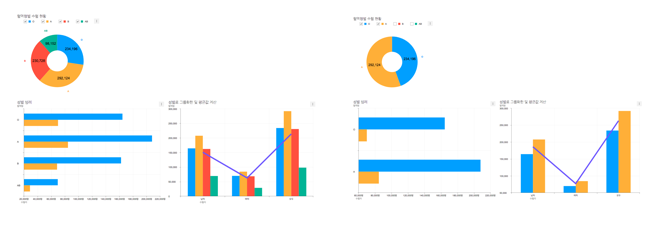
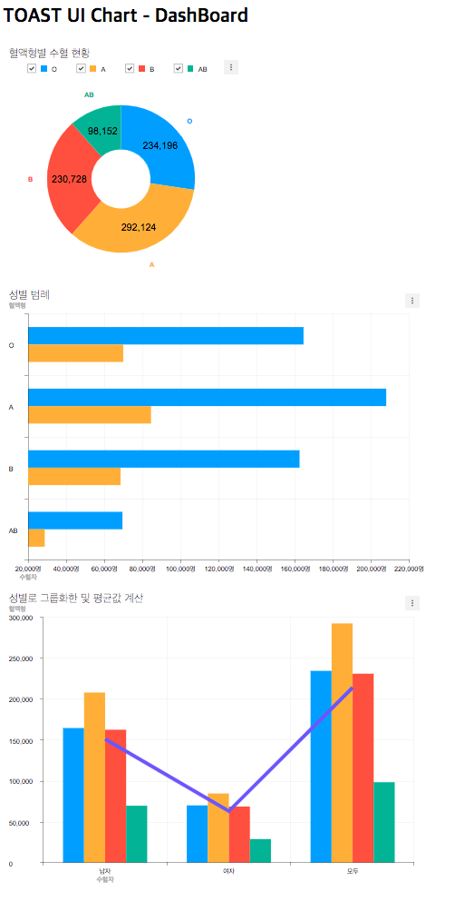

8. 대표차트(도넛 차트)에 범례 체크박스 옵션을 추가하고 차트 전체에 반영되도록 하기¶
범례 체크박스의 체크 상태가 변경되면 unchecked 된 범례는 차트의 그래프에 보이지 않게 됩니다.
이번 단계에서는 대표 차트에서 범례 체크박스 를 변경하면 다른 모든 차트에 함께 적용되도록 만듭니다. 앞으로는 이 기능을 범례 동기화 기능 이라고 명명하겠습니다.
이해를 돕기 위한 완성된 모습의 이미지입니다. 왼쪽은 모든 혈액형 이 선택된 모습이고 오른쪽은 O형과 A형 만 선택된 모습입니다.
체크박스 옵션 적용을 위해 미리 공식 위키문서를 확인해 봅니다.
8.1. 대표 차트(도넛 차트)를 제외한 모든 차트의 범례 표시 영역을 감추기¶
대표 차트에서만 범례를 보이거나 보이지 않도록 설정하고 싶기 때문에 대표 차트를 제외한 차트에서는 범례 체크박스 영역이 필요 없음으로 문서에서 확인한 legend.visible 옵션을 활용하여 숨깁니다.
// src/index.js
//...
const barChartOptions = {
...
legend: {
visible: false
}
};
...
const lineColumnOptions = {
...
legend: {
visible: false
}
};
8.2. 대표 차트(도넛 차트)에 차트에 레전더 체크박스 옵션 적용하기¶
앞에서 확인했던 위키 문서를 참고하여 대표 차트의 legend.visible 옵션을 활성화하고 legend.align 옵션으로 차트의 가장 상단에 범례 영역을 위치시킵니다.
// src/index.js
//...
const donutChartOptions = {
...
legend: {
visible: true,
align: 'top'
}
};
이제 도넛 차트에만 혈액형 범례의 체크박스가 나오는 것을 확인할 수 있습니다.
8.3. 범례 동기화 기능을 구현하기 위하여 위키 문서를 참고하기¶
기능을 완성하기 위해서는 아래의 두 가지 차트의 기능을 이용해야 합니다.
- changeCheckedLegends 이벤트 탐지하기
- setData API를 이용해 체크된 데이터만 표시하여 다시 그리기
8.4. 체크박스 변경 이벤트 리스너 만들어를 구현하여 나머지 차트에 반영시키기¶
1. 대표 차트(도넛 차트)의 changeCheckedLegends 이벤트를 구독하기.
앞에서 확인한 문서를 바탕으로 대표 차트(도넛 차트)의 changeCheckedLegends 이벤트를 가로채어 변경된 범례 정보를 확인합니다.
// src/index.js
donutChart.on('changeCheckedLegends', info => {
console.log(info);
});
2. changeCheckedLegends 이벤트가 발생할 때마다 나머지 '바 차트'와 '라인-컬럼'차트의 데이터를 변경하여 다시 그려줍니다.
미리 만들어둔 reMakeDataForBarChart 와 reMakeDataForLineColumnChart 함수를 이용하여 대표 차트에서 숨기기로 결정된 범례는 나머지 차트에서도 함께 보이지 않도록 데이터를 가공합니다. 함수 구현과 관련하여 아래 3번 항목 을 참고해주세요.
// src/index.js
donutChart.on('changeCheckedLegends', info => {
const checkedInfo = info[donutChart.chartType];
// For barChart
barChart.setData(reMakeDataForBarChart(barChartData, checkedInfo));
// For comboChart
lineColumnChart.setData(reMakeDataForLineColumnChart(lineColumnData, checkedInfo));
});
3. "미리 구현한 데이터 가공 함수" 참고
가공 함수의 역할은 대표 차트의 혈액형 범례 에서 그래프로 그리지 않기로 결정된 혈액형에 대하여 나머지 차트 데이터에서도 제거하여 줍니다.
라인-컬럼 차트 는 사실 차트 2개(라인 차트, 컬럼 차트)가 합쳐진 콤보 차트 이므로 라인 차트 가공 함수 와 컬럼 차트 가공 함수 를 함께 구현합니다.
// src/index.js
// 바 차트 가공
function reMakeDataForBarChart(originalData, checkedInfo) {
const barChartSeriesData = originalData.series;
const newBarChartSeriesData = barChartSeriesData.map(seriesItem => ({
name: seriesItem.name,
data: Array.from(seriesItem.data).filter((value, valueIdx) => checkedInfo[valueIdx])
}));
return {
categories: Array.from(originalData.categories).filter((value, valueIdx) => checkedInfo[valueIdx]),
series: newBarChartSeriesData
};
}
// 라인-컬럼 차트 가공
function reMakeDataForLineColumnChart(originalData, checkedInfo) {
const comboChartSeriesData = originalData.series;
return {
categories: originalData.categories,
series: {
column: reMakeDataForColumnChart(comboChartSeriesData.column, checkedInfo),
line: reMakeDataForLineChart(comboChartSeriesData.line, comboChartSeriesData.column, checkedInfo)
}
};
}
// 컬럼차트 가공
function reMakeDataForColumnChart(originalData, checkedInfo) {
return originalData.map((seriesItem, idx) => (
Object.assign({}, seriesItem, {visible: checkedInfo[idx]})
));
}
// 라인차트 가공
function reMakeDataForLineChart(lineChartSeriesData, columnChartSeriesData, checkedInfo) {
const makeTotalAverage = () => (
columnChartSeriesData.reduce((accumulator, seriesItem, idx) => {
if (checkedInfo[idx]) {
accumulator.forEach((accValue, accIdx) => {
accumulator[accIdx] += seriesItem.data[accIdx];
});
}
return accumulator;
}, [0, 0, 0]).map(totalValue => totalValue / (checkedInfo.filter(checkInfo => checkInfo).length))
);
return lineChartSeriesData.map(seriesItem => ({
name: seriesItem.name,
data: makeTotalAverage()
}));
}
8.5. 완성된 예제 확인하기¶
아래의 이미지는 완성된 모습입니다. 미리 완성된 예제는 github 저장소의 example 디렉터리 에서 확인할 수 있습니다.
